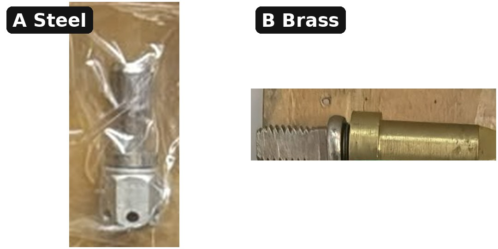
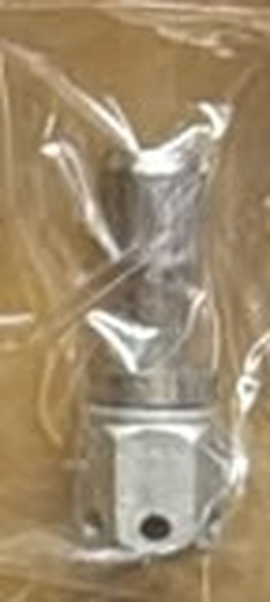
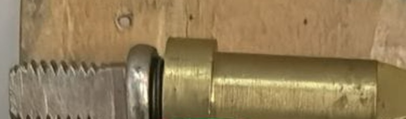
Pressure cooker vent tube (steam pipe)
from KES 490 · 1 piece
Key features
- Replacement vent tube for manual pressure cookers, the pipe on the lid that the weight sits on
- Replace it if it is blocked, bent or loose
- Steel vent tube with nut for most one-handle cookers, or the long brass vent tube for two-handle cookers
- Send us a photo of your lid on WhatsApp if unsure
| Specifications | |
|---|---|
| Sold as | 1 piece |
| Category | Pressure cookers & air fryers |
| Type | Pressure cooker spare parts |
| Condition | Brand new |
| Tube | 2 options |
| Product code | spare-vent-tube |
Pick your choice, then tap Order:
| Tube | Price |
|---|---|
| Steel vent tube | KES 490 |
| Brass vent tube, two-handle cookers | KES 790 |
Delivery in Nairobi and worldwide (at customer's cost). Pay by M-Pesa to 0114 308 114. Questions? WhatsApp or call 0114 308 114.
More pressure cookers & air fryers
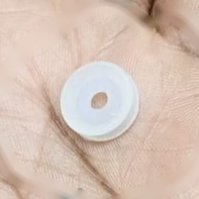
Pressure cooker float valve seal, white siliconefrom KES 450
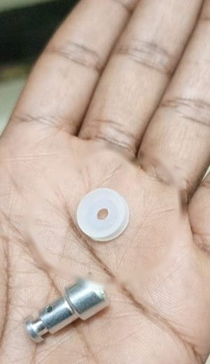
Pressure cooker float valve pin + seal setKES 890
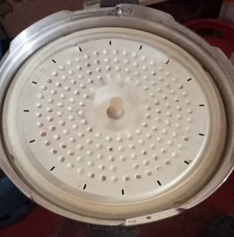
Pressure cooker lid safety valve rubber plugKES 590
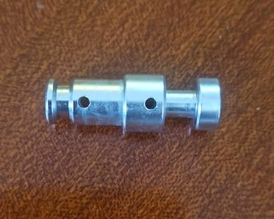
Float valve with rubber for Von, Mika & similar electric pressure cookersKES 1,290
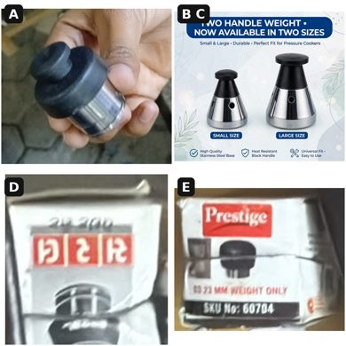
Pressure cooker weights (whistles / steel caps): standard, two-handle & PrestigeKES 850
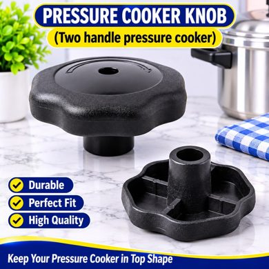
Pressure cooker lid knob for two-handle cookersKES 790
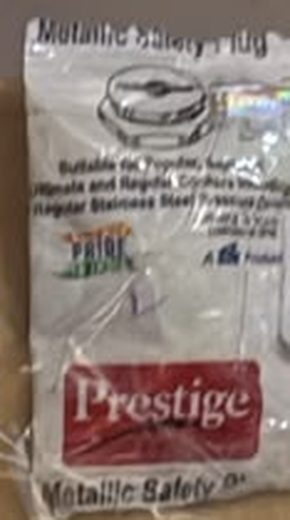
Pressure cooker safety valves, incl. Prestige metallic safety plugKES 550
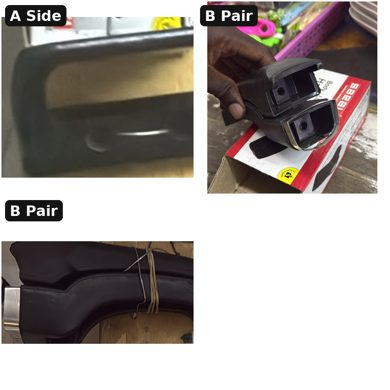
Pressure cooker handles: double handle (body + lid pair) & side handlefrom KES 390